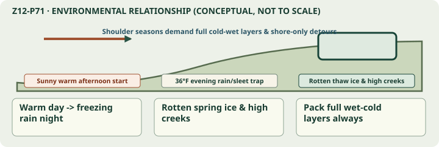

Z12-P71 · Extreme environments · New manuscript
Manage rapid spring and autumn shoulder-season freeze-thaw transitions
Navigate unpredictable shoulder-season conditions where warm sunny days turn swiftly into freezing nights, rotten ice and flooded streams.
When it applies · March–May and October–November travel across the Upper Midwest, northern forests and mountains.
Equipment · Full cold-wet rain/insulation kit, waterproof traction footwear and flood/ice awareness.

Actions
- Prepare for both wet rain AND freezing cold on the same day during spring and autumn—35°F–45°F sleet and freezing rain are prime hypothermia conditions because travelers pack too lightly for "almost summer" or "not yet winter."[E06, E10, E25]
- Treat spring thaw rivers, flooded lowland trails and rotting honeycomb lake ice as peak seasonal hazards—snowmelt runoff swells creeks rapidly while melting ice becomes completely unpredictable.[W25, X01, E04]
- Expect autumn daylight to shrink rapidly week by week and wet fallen leaves to hide roots, slick mud and faded trail treads.[E01, N01, ED]
Failure recognition · Hiking in late October wearing cotton fleece under sunny 58°F afternoon skies, then getting drenched by an unexpected 36°F evening rain front.[E06, E10]
Verify · Confirm waterproof rain shell, dry synthetic/wool insulating layer, headlamp and shore-only ice/flood detour discipline on every shoulder-season trip.[E06, E10, E12, ED]
Stop or change course · Wet chilled clothing, rising snowmelt crossings or softening thaw ice end travel immediately—retreat to dry ground and warm shelter.[E06, N10, X01]
Evidence and editorial notes
- E01 · Minnesota DNR · Safety in State Forests (current web edition)
- Section: Before your trip and while visiting · Conditions: State-forest travel and backcountry planning
Support: Know the route, check conditions, carry navigation and safety equipment and share trip details.
Limitations: Conditions and trail maintenance vary seasonally across forest units. · Conflicting evidence: None; aligns with NPS-H.
Editorial note: Foundation for trip planning and pre-departure risk checks. · Specialist reviewer: Land management and search and rescue
Primary source · checked 2026-11-24 - E04 · NWS · Flood Safety: Key Points for Camping and Hiking (agency PDF)
- Section: Before and during camping; know your surroundings · Conditions: Stream valleys and runoff channels subject to flash flooding
Support: Choose higher ground away from water channels. Rain far upstream can drive rapid flooding.
Limitations: Dry streambeds and gentle swales can flood rapidly without local rainfall. · Conflicting evidence: None; aligns with NWS-FLOOD.
Editorial note: Core hydrological exclusion rule for shelter placement. · Specialist reviewer: Emergency management and hydrology
Primary source · checked 2026-11-24 - E06 · CDC · Preventing Hypothermia (current web edition)
- Section: Recognizing and treating hypothermia · Conditions: Cold wet exposure; signs such as confusion, slurred speech, fumbling or drowsiness
Support: Suspected hypothermia warrants prompt help and protection from further cooling. It can occur above freezing if wet or chilled.
Limitations: Early mild shivering can mask rapidly worsening judgment impairment. · Conflicting evidence: None; aligns with ARC and WMS guidance.
Editorial note: Anchors exposure-to-medical escalation thresholds. · Specialist reviewer: Wilderness medicine
Primary source · checked 2026-11-24 - E10 · NWS · What To Do If You're Caught in a Winter Storm (current web edition)
- Section: Outside > Protect yourself from frostbite and hypothermia · Conditions: Outdoor winter storm
Support: Keep clothing dry and avoid overexertion. Wetness accelerates cooling.
Limitations: Cotton retains moisture and accelerates conductive and evaporative heat loss. · Conflicting evidence: None; reinforces moisture-management layering.
Editorial note: Links sweat management to overnight insulation integrity. · Specialist reviewer: Cold-weather shelter and wilderness medicine
Primary source · checked 2026-11-24 - E12 · Minnesota DNR · Ice Safety (current web edition)
- Section: Ice Safety > basic precautions · Conditions: Minnesota ice edges and travel routes
Support: No ice is universally safe. Strength can differ over short distances; appearance or tracks alone cannot establish a safe crossing.
Limitations: Currents, springs, snow insulation, and freeze-thaw cycles weaken ice invisibly. · Conflicting evidence: None; mandates shore-bound detour for foundational walking parties.
Editorial note: Maintains strict separation from specialized B013 ice chapters. · Specialist reviewer: Ice safety and search and rescue
Primary source · checked 2026-11-24 - E25 · FEMA / Ready.gov · Winter Weather (current web edition)
- Section: Winter Weather > Stay Safe During Winter Storms · Conditions: Extreme cold, drifting snow, and power or travel disruption
Support: Prepare layered clothing, emergency shelter/heat alternatives, and vehicle winter kits; stay indoors during blizzards, protect against frostbite/hypothermia, and keep exhaust vents and exits clear of drifting snow.
Limitations: Drifting snow can block tent vents, doors, and vehicle tailpipes silently overnight. · Conflicting evidence: None; reinforces overnight exit/vent clearance checks.
Editorial note: Supports snow-drift exit maintenance and winter shelter failure recognition. · Specialist reviewer: Cold-weather shelter and emergency management
Primary source · checked 2026-11-24 - N01 · USGS · US Topo Maps for America (current web edition)
- Section: US Topo Maps > Coordinate Grids, Scale and Currency · Conditions: Map reading and trip planning in the United States
Support: USGS topographic maps provide elevation contours, hydrography, roads, land cover and scale/date metadata; check publication date because trails, roads and structures change over time.
Limitations: Historical topo sheets (such as 1965 Ely quadrangle) illustrate symbols only and never establish current routes or declination. · Conflicting evidence: None; aligns with USGS-MAP-R and NOAA-D.
Editorial note: Grounds map margin, scale, date and historical-excerpt limits in Z11. · Specialist reviewer: Cartography and navigation
Primary source · checked 2026-11-24 - N10 · NWS · Turn Around Don't Drown (current web edition)
- Section: Turn Around Don't Drown > Flooded Crossings and Terrain Detours · Conditions: Navigating around flooded streams, washes and submerged roads
Support: Water barriers and flooded crossings conceal washed-out banks, swift undercurrents and deep holes; detour along verified dry high-ground routes or hold in a safe elevated spot.
Limitations: Applies equally to foot and vehicle navigation. · Conflicting evidence: Aligns with B014-P12 and T07.
Editorial note: Connects navigation rerouting to flood and water-barrier boundaries. · Specialist reviewer: Search and rescue and emergency management
Primary source · checked 2026-11-24 - W25 · USGS · Snowmelt Runoff and the Water Cycle (current web edition)
- Section: Snowmelt Runoff and the Water Cycle · runoff · Conditions: Late-winter and spring snowpack runoff and melting snow
Support: Melting snow can contribute to runoff and streamflow. The observed result varies with watershed, weather and upstream conditions.
Limitations: This source does not establish a safe crossing hour, a contamination level or a universal meltwater hydrograph. · Conflicting evidence: None; reinforces snow source screening and seasonal runoff shifts.
Editorial note: Supports seasonal snow/ice water cards and meltwater screening. · Specialist reviewer: Hydrology and cold-weather operations
Primary source · checked 2026-11-24 - X01 · Minnesota DNR · General Ice Thickness Guidelines (current web edition)
- Section: General Ice Thickness Guidelines > New Clear Ice Only · Conditions: Minnesota lakes and ponds during stable winter freezing
Support: Agency thickness guidelines apply ONLY to new, clear solid ice and are NEVER a guarantee of safety; white snow-ice is roughly half as strong, and currents, springs, inlets, outlets and snow cover create hidden thin zones.
Limitations: No ice is 100% safe; one drilled thickness check does not clear an entire crossing route. · Conflicting evidence: Directly reconciles B013 P01–P05, P11 and P17 with MN DNR warnings.
Editorial note: Enforces non-guarantee ice boundaries across Z12. · Specialist reviewer: Ice safety and winter search and rescue
Primary source · checked 2026-11-24
Source lineage · NWS winter/flood safety and USGS snowmelt; new manuscript · Classification · New manuscript.